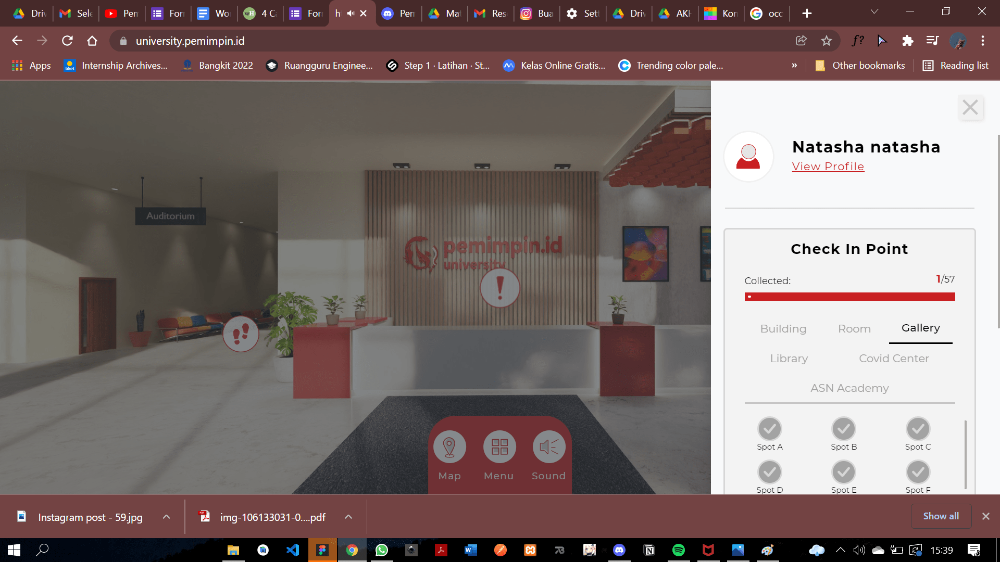

Kota metropolitan terbesar di Provinsi Jawa Barat, sekaligus menjadi ibu kota provinsi tersebut.
Kata Bandung berasal dari kata bendung atau bendungan karena terbendungannya sungai citarum oleh lava Gunung Tangkuban Perahu Berdasarkan filosofi Sunda, kata Bandung juga berasal dari kalimat Nga-Bandung-an Banda Indung, yang merupakan kalimat sakral